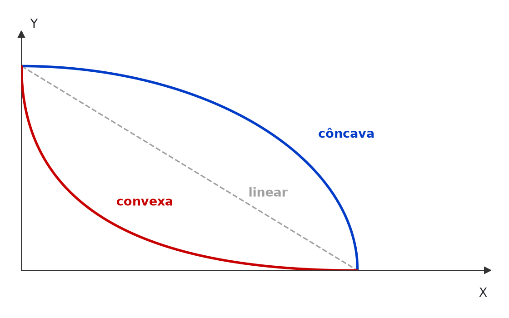
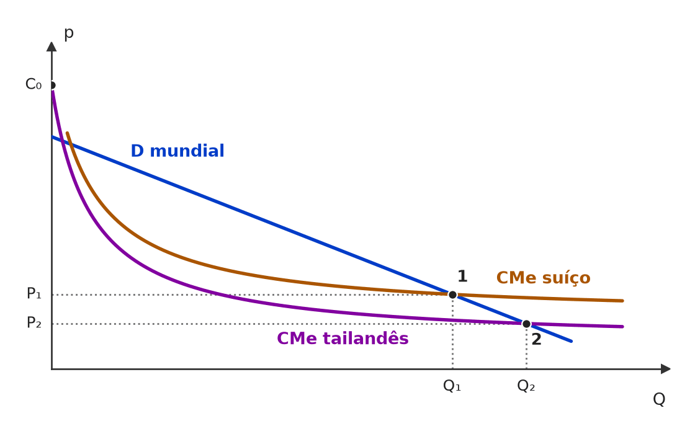
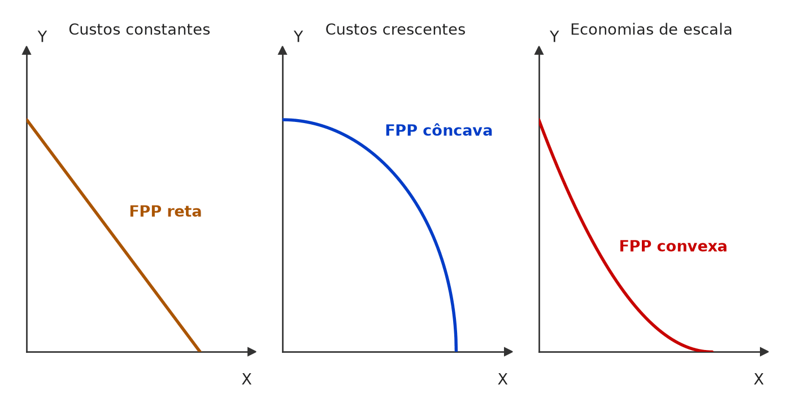

[C/E - Nidi/Jacqueline Bueno › Simulado Maio/2026 › Novas teorias do comércio]No que diz respeito à Teoria do Comércio Internacional, julgue o item a seguir. Item: Quando um país apresenta economias de escala em determinado setor, nem os preços dos produtos nem a remuneração dos fatores são suficientes para prever o padrão de comércio com seus parceiros comerciais. Isso ocorre porque a presença de rendimentos crescentes de escala permite ao país reduzir os custos médios ao aumentar o volume produzido e isso fará com que passe a ser exportador líquido dos produtos desse setor. | ✅ CERTO Quando um país apresenta economias de escala em determinado setor, nem os preços dos produtos nem a remuneração dos fatores são suficientes para prever o padrão de comércio com seus parceiros comerciais. Isso ocorre porque a presença de rendimentos crescentes de escala permite ao país reduzir os custos médios ao aumentar o volume produzido e isso fará com que passe a ser exportador líquido dos produtos desse setor. 🎯 Em poucas palavras: Com rendimentos crescentes, quem produz mais tem custo médio menor: a especialização pode ser decidida por história, tamanho do mercado e pioneirismo, e não só por preços autárquicos ou dotações de fatores. 📖 Destrinchando o tema:
🧐 Dissecando a redação do item: [paráfrase fiel · contraintuitivo] O item afirma que os determinantes clássicos “não bastam”, o que soa como heresia para quem estudou só H-O — e é a tese da nova teoria. O “nem… nem…” não é modulador absoluto aqui: diz que não são suficientes, não que são irrelevantes. 😈 Para dificultar:
|
[C/E - IDEG – Prof. Bozan › Pré-TPS/2026 › Novas teorias do comércio]Sobre as teorias de comércio contemporâneas, julgue o item a seguir. Item: Modelos comerciais como de Kemp indicam que há diversas fontes para a economia de escala no comércio internacional. Tais economias podem ocorrer dentro da firma, fora dela ou entre países. | ✅ CERTO Modelos comerciais como de Kemp indicam que há diversas fontes para a economia de escala no comércio internacional. Tais economias podem ocorrer dentro da firma, fora dela ou entre países. 🎯 Em poucas palavras: As economias de escala podem ser internas à firma, externas à firma mas internas à indústria nacional, ou internacionais (externas à indústria de um país, ligadas ao tamanho do mercado mundial). 📖 Destrinchando o tema:
🧐 Dissecando a redação do item: [literalidade · modulador relativo] Item de classificação, protegido por “podem ocorrer”. O nome de Kemp intimida, mas o conteúdo é a tipologia padrão (interna, externa, internacional). 😈 Para dificultar:
|
[C/E - IDEG – Prof. Bozan › Pré-TPS/2026 › Novas teorias do comércio]Sobre as teorias de comércio contemporâneas, julgue o item a seguir. Item: Para certas economias com grande quantidade de monopólios que ofertam produtos essenciais à população e que operam em parte elástica da curva de demanda, o fechamento econômico é uma alternativa viável. | ✅ CERTO Para certas economias com grande quantidade de monopólios que ofertam produtos essenciais à população e que operam em parte elástica da curva de demanda, o fechamento econômico é uma alternativa viável. 🎯 Em poucas palavras: A fonte dá CERTO: em mercados imperfeitos, os resultados de bem-estar do comércio são contingentes, e restringir o comércio “pode” ser defensável em casos particulares. Mas a lição-padrão vai no sentido oposto: a abertura disciplina monopólios. ⚠️ Gabarito contestável: Mantido o CERTO da fonte, mas a resposta mais defensável é ERRADO. (1) O efeito pró-competitivo do comércio (Krugman e Obstfeld): com a abertura, o monopolista doméstico enfrenta concorrência importada, cobra preço menor e produz mais; fechar a economia faz o contrário e eleva o peso morto. (2) O enunciado é internamente frágil: produto “essencial” sugere demanda inelástica, e todo monopolista já opera no trecho elástico da demanda (onde RMg > 0), de modo que essa condição nada acrescenta. O próprio comentário de origem fala em demanda “relativamente inelástica”, ao contrário do item, e admite tratar-se de resultado contingente, não de regra. 📖 Destrinchando o tema:
🧐 Dissecando a redação do item: [modulador relativo · detalhe] A banca se apoia em “certas economias” e “alternativa viável” para sustentar o CERTO, como resultado excepcional de concorrência imperfeita. A combinação de “essenciais” com “parte elástica” é ruído técnico: não há modelo-padrão em que ela justifique autarquia. 😈 Para dificultar:
|
❌ [C/E - IDEG – Prof. Bozan › Pré-TPS/2026 › Novas teorias do comércio]Sobre as teorias de comércio contemporâneas, julgue o item a seguir. Item: As diferenciações dos produtos no comércio internacional podem ser vertical (atributos associados à qualidade dos produtos com finalidades semelhantes) e/ou horizontal (atributos associados às características dos produtos). | ✅ CERTO As diferenciações dos produtos no comércio internacional podem ser vertical (atributos associados à qualidade dos produtos com finalidades semelhantes) e/ou horizontal (atributos associados às características dos produtos). 🎯 Em poucas palavras: Vertical = mesma função, qualidades diferentes (há um “melhor” objetivo). Horizontal = qualidade parecida, características diferentes (cor, design, marca, sabor), escolhidas por gosto. 📖 Destrinchando o tema:
🧐 Dissecando a redação do item: [literalidade · detalhe] Definições de manual. A armadilha está na proximidade dos parênteses: “qualidade” × “características” parece distinção vaga, e o candidato desconfia. As versões ERRADAS trocam os rótulos (vertical = características; horizontal = qualidade). 😈 Para dificultar:
|
[C/E - IDEG – Prof. Bozan › Pré-TPS/2026 › Novas teorias do comércio]Sobre as teorias de comércio contemporâneas, julgue o item a seguir. Item: O comércio intrassetorial é definido como o intercâmbio entre dois países com exportações e importações simultâneas de produtos pertencentes a uma mesma indústria, por exemplo, quando a matriz de uma montadora automobilística francesa importa de sua filial posicionada na Argentina. | ❌ ERRADO O comércio intrassetorial é definido como o intercâmbio entre dois países com exportações e importações simultâneas de produtos pertencentes a uma mesma indústria, por exemplo, quando a matriz de uma montadora automobilística francesa importa de sua filial posicionada na Argentina. 🎯 Em poucas palavras: A definição está certa; o exemplo não: matriz importando da filial é comércio intrafirma (critério societário), e num só sentido. Intrassetorial é França exportar e importar automóveis, quem quer que sejam as empresas. 📖 Destrinchando o tema:
🧐 Dissecando a redação do item: [troca de conceito · meia-verdade] A 1ª parte é a definição exata; o erro foi enxertado no exemplo, que ilustra outro conceito. 🔥 Em itens com “por exemplo”, teste sempre se o exemplo cabe na definição. 😈 Para dificultar:
✍️ Reescrita correta: O comércio intrassetorial é definido como o intercâmbio entre dois países com exportações e importações simultâneas de produtos pertencentes a uma mesma indústria, por exemplo, quando a França exporta automóveis para a Argentina e importa automóveis argentinos. |
❌ [C/E - IDEG – Prof. Bozan › Pré-TPS/2026 › Novas teorias do comércio]Julgue o item a seguir, sobre a diferenciação de produtos e o comércio internacional. Item: Na diferenciação vertical de produtos, a principal característica considerada é a qualidade, em que dois produtos oferecem a mesma funcionalidade, mas apresentam diferenças de qualidade significativas. | ✅ CERTO Na diferenciação vertical de produtos, a principal característica considerada é a qualidade, em que dois produtos oferecem a mesma funcionalidade, mas apresentam diferenças de qualidade significativas. 🎯 Em poucas palavras: Diferenciação vertical = mesma função, qualidade diferente: a preço igual, todos prefeririam a mesma versão. É a definição de manual. 📖 Destrinchando o tema:
🧐 Dissecando a redação do item: [literalidade] Definição pura. O risco é a troca de rótulos (vertical ↔ horizontal), mais frequente quando a banca cobra as duas no mesmo bloco. 😈 Para dificultar:
|
[C/E - IDEG – Prof. Bozan › Pré-TPS/2026 › Novas teorias do comércio]Julgue o item a seguir, sobre a diferenciação de produtos e o comércio internacional. Item: O comércio intrasetorial envolve a troca de produtos entre países dentro do mesmo setor onde tanto exportação quanto importação ocorrem simultaneamente. Adicionalmente, a diferenciação horizontal não interfere nas transações, pois estas são baseadas em diferenciação qualitativa, sem levar em consideração as preferências dos consumidores que podem afetar o comércio internacional bilateralmente. | ❌ ERRADO O comércio intrasetorial envolve a troca de produtos entre países dentro do mesmo setor onde tanto exportação quanto importação ocorrem simultaneamente. Adicionalmente, a diferenciação horizontal não interfere nas transações, pois estas são baseadas em diferenciação qualitativa, sem levar em consideração as preferências dos consumidores que podem afetar o comércio internacional bilateralmente. 🎯 Em poucas palavras: A 1ª frase está certa. A 2ª, não: a diferenciação horizontal é justamente a baseada nas preferências dos consumidores, e é uma das bases do comércio intrassetorial. 📖 Destrinchando o tema:
🧐 Dissecando a redação do item: [meia-verdade · troca de conceito] A 1ª frase é definição de manual; a 2ª inverte o conceito de diferenciação horizontal e nega o papel das preferências. O “Adicionalmente” é o ponto de enxerto típico de meia-verdade. 😈 Para dificultar:
✍️ Reescrita correta: O comércio intrasetorial envolve a troca de produtos entre países dentro do mesmo setor onde tanto exportação quanto importação ocorrem simultaneamente. Adicionalmente, a diferenciação horizontal interfere nas transações, pois se baseia em atributos distintos de produtos de qualidade semelhante, levando em consideração as preferências dos consumidores que podem afetar o comércio internacional bilateralmente. |
[C/E - IDEG – Prof. Bozan › Pré-TPS/2026 › Novas teorias do comércio]Julgue o item a seguir, sobre a diferenciação de produtos e o comércio internacional. Item: Economias de escala internas à firma ocorrem quando uma empresa reduz seus custos de produção à medida que aumenta sua produção total. Já as economias externas à firma são aquelas em que é o crescimento da indústria como um todo que possibilita a redução de custos de todas as empresas individuais desse setor. | ✅ CERTO Economias de escala internas à firma ocorrem quando uma empresa reduz seus custos de produção à medida que aumenta sua produção total. Já as economias externas à firma são aquelas em que é o crescimento da indústria como um todo que possibilita a redução de custos de todas as empresas individuais desse setor. 🎯 Em poucas palavras: Interna: o custo médio cai com o tamanho da firma. Externa: cai com o tamanho da indústria (local), mesmo que cada firma seja pequena. 📖 Destrinchando o tema:
🧐 Dissecando a redação do item: [literalidade] Definições de manual (Krugman e Obstfeld). A versão ERRADA usual troca os sujeitos: “internas = crescimento da indústria”, “externas = crescimento da firma”. 😈 Para dificultar:
|
[C/E - IDEG – Prof. Bozan › Pré-TPS/2026 › Novas teorias do comércio]Julgue o item a seguir, sobre a diferenciação de produtos e o comércio internacional. Item: O conceito de comércio intrafirma refere-se ao comércio de bens e insumos entre subsidiárias da mesma corporação, localizadas em diferentes países. No entanto, a transferência de bens entre subsidiárias da mesma empresa tende, invariavelmente, a ser limitada quando há significativas diferenças tecnológicas entre elas, gerando desafios para manter a competitividade no mercado internacional. | ❌ ERRADO O conceito de comércio intrafirma refere-se ao comércio de bens e insumos entre subsidiárias da mesma corporação, localizadas em diferentes países. No entanto, a transferência de bens entre subsidiárias da mesma empresa tende, invariavelmente, a ser limitada quando há significativas diferenças tecnológicas entre elas, gerando desafios para manter a competitividade no mercado internacional. 🎯 Em poucas palavras: A definição está certa; o erro é o “invariavelmente”. Diferenças tecnológicas entre unidades costumam motivar o comércio intrafirma (cada filial faz a etapa que lhe cabe), em vez de limitá-lo. 📖 Destrinchando o tema:
🧐 Dissecando a redação do item: [modulador absoluto · meia-verdade] 1ª frase: definição correta. 2ª frase: “tende, invariavelmente” — combinação contraditória (tendência não é invariável) que denuncia o enxerto. E a ideia de fundo também é falsa: diferença tecnológica é motor, não freio, do comércio intrafirma. 😈 Para dificultar:
✍️ Reescrita correta: O conceito de comércio intrafirma refere-se ao comércio de bens e insumos entre subsidiárias da mesma corporação, localizadas em diferentes países. No entanto, a transferência de bens entre subsidiárias da mesma empresa pode ser dificultada, em alguns casos, quando há significativas diferenças tecnológicas entre elas, gerando desafios para manter a competitividade no mercado internacional. |
❌ [C/E - Armstrong › Pré-TPS/2026 › Novas teorias do comércio]Acerca das teorias do comércio internacional, julgue o item a seguir. Item: A Teoria do Ciclo de Vida do Produto (Vernon) explica o comércio intraindustrial entre países desenvolvidos, argumentando que a diferenciação de produtos e as economias de escala são mais relevantes que as vantagens comparativas tradicionais para explicar esse fluxo. | ❌ ERRADO A Teoria do Ciclo de Vida do Produto (Vernon) explica o comércio intraindustrial entre países desenvolvidos, argumentando que a diferenciação de produtos e as economias de escala são mais relevantes que as vantagens comparativas tradicionais para explicar esse fluxo. 🎯 Em poucas palavras: Fenômeno e mecanismo certos, teoria errada: quem explica o comércio intraindustrial por escala e diferenciação é a Nova Teoria do Comércio (Krugman, Helpman). Vernon explica a migração da produção ao longo da vida do produto. 📖 Destrinchando o tema:
🧐 Dissecando a redação do item: [troca de ator] Erro de atribuição: o item descreve corretamente a Nova Teoria do Comércio e põe o nome de Vernon. Como o ciclo do produto também é “nova teoria” (anos 1960, pós-Leontief), a confusão é natural. 🔥 A banca adora trocar os rótulos entre Vernon, Linder, Krugman e Melitz. 😈 Para dificultar:
✍️ Reescrita correta: A Nova Teoria do Comércio (Krugman) explica o comércio intraindustrial entre países desenvolvidos, argumentando que a diferenciação de produtos e as economias de escala são mais relevantes que as vantagens comparativas tradicionais para explicar esse fluxo. |
[C/E - Nabuco › Novas teorias do comércio]A respeito das teorias do comércio, julgue o item a seguir. Item: De acordo com a nova teoria do comércio internacional, a existência de economias de escala e de marcas globais são uma explicação mais convincente para o comércio internacional, descartando as teorias tradicionais baseadas em vantagens comparativas ou diferenças na abundância de fatores de produção. | ❌ ERRADO De acordo com a nova teoria do comércio internacional, a existência de economias de escala e de marcas globais são uma explicação mais convincente para o comércio internacional, descartando as teorias tradicionais baseadas em vantagens comparativas ou diferenças na abundância de fatores de produção. 🎯 Em poucas palavras: A nova teoria complementa, não descarta, as tradicionais: Ricardo e H-O seguem explicando o comércio interindustrial; escala e diferenciação explicam o intraindustrial. 📖 Destrinchando o tema:
🧐 Dissecando a redação do item: [extrapolação · modulador absoluto] O item parte de algo verdadeiro (a nova teoria explica bem parte do comércio) e extrapola para o descarte das clássicas. “Descartando” é a palavra-gatilho: teorias econômicas novas raramente “descartam”; em prova, “complementam”. 😈 Para dificultar:
✍️ Reescrita correta: De acordo com a nova teoria do comércio internacional, a existência de economias de escala e de marcas globais são uma explicação mais convincente para o comércio internacional, complementando as teorias tradicionais baseadas em vantagens comparativas ou diferenças na abundância de fatores de produção. |
[C/E - Nabuco › Novas teorias do comércio]A respeito das teorias do comércio, julgue o item a seguir. Item: As economias de escala fornecem um incentivo ao comércio internacional porque cada país especializa-se em produzir produtos diversificados, usando a mesma escala das plantas, fazendo uso das mesmas operações e/ou insumos de forma mais eficiente. | ❌ ERRADO As economias de escala fornecem um incentivo ao comércio internacional porque cada país especializa-se em produzir produtos diversificados, usando a mesma escala das plantas, fazendo uso das mesmas operações e/ou insumos de forma mais eficiente. 🎯 Em poucas palavras: Com escala, compensa concentrar: cada país produz uma gama limitada de bens em plantas maiores e obtém a variedade pelo comércio. “Diversificar com a mesma escala” anula o ganho. 📖 Destrinchando o tema:
🧐 Dissecando a redação do item: [inversão · contradição] Troca “especializar-se em poucos produtos” por “produzir produtos diversificados” e acrescenta “mesma escala”, que nega a premissa. O item soa plausível porque “diversificação” e “eficiência” aparecem juntas nos manuais — mas a diversificação é do consumo. 😈 Para dificultar:
✍️ Reescrita correta: As economias de escala fornecem um incentivo ao comércio internacional porque cada país especializa-se em produzir uma gama limitada de produtos, em plantas de maior escala, fazendo uso das mesmas operações e/ou insumos de forma mais eficiente. |
[C/E - Nabuco › Novas teorias do comércio]Em relação à Nova Teoria do Comércio, julgue o item a seguir. Item: A Nova Teoria do Comércio foi desenvolvida principalmente para explicar o comércio interindústria entre países com dotações de fatores muito distintas. | ❌ ERRADO A Nova Teoria do Comércio foi desenvolvida principalmente para explicar o comércio interindústria entre países com dotações de fatores muito distintas. 🎯 Em poucas palavras: A Nova Teoria do Comércio nasceu para explicar o comércio intraindústria entre países parecidos em dotações e tecnologia; o comércio interindústria entre países diferentes já era explicado pelas vantagens comparativas. 📖 Destrinchando o tema:
🧐 Dissecando a redação do item: [troca de conceito · inversão] O item troca “intra” por “inter” e, coerentemente com a troca, inverte a condição dos países (“muito distintas”). Tudo “fecha” internamente — mas descreve o objeto da teoria clássica, não da nova. 🔥 Prefixo inter/intra é a pegadinha número um deste tema. 😈 Para dificultar:
✍️ Reescrita correta: A Nova Teoria do Comércio foi desenvolvida principalmente para explicar o comércio intraindústria entre países com dotações de fatores semelhantes. |
[C/E - Nabuco › Novas teorias do comércio]Em relação à Nova Teoria do Comércio, julgue o item a seguir. Item: A Nova Teoria do Comércio assume concorrência perfeita nos mercados, similarmente aos modelos clássicos. | ❌ ERRADO A Nova Teoria do Comércio assume concorrência perfeita nos mercados, similarmente aos modelos clássicos. 🎯 Em poucas palavras: A ruptura da Nova Teoria do Comércio é justamente abandonar a concorrência perfeita: ela supõe concorrência imperfeita (em geral, monopolística), ao contrário de Ricardo e Heckscher-Ohlin. 📖 Destrinchando o tema:
🧐 Dissecando a redação do item: [troca de conceito · inversão] O item atribui à Nova Teoria a hipótese que ela veio derrubar e reforça o erro com “similarmente aos modelos clássicos”. Pista: escala crescente e concorrência perfeita são incompatíveis — se o item fala em Nova Teoria, a concorrência é imperfeita. 😈 Para dificultar:
✍️ Reescrita correta: A Nova Teoria do Comércio assume concorrência imperfeita nos mercados, diferentemente dos modelos clássicos. |
[C/E - Nabuco › Novas teorias do comércio]Em relação à Nova Teoria do Comércio, julgue o item a seguir. Item: As economias externas de escala são benefícios externos às empresas que surgem da concentração geográfica de atividades econômicas, contribuindo para a redução dos custos médios das firmas. | ✅ CERTO As economias externas de escala são benefícios externos às empresas que surgem da concentração geográfica de atividades econômicas, contribuindo para a redução dos custos médios das firmas. 🎯 Em poucas palavras: É a definição de economias externas de escala (ou de aglomeração): o custo médio de cada firma cai porque a indústria cresce no local, não porque a firma cresce. 📖 Destrinchando o tema:
🧐 Dissecando a redação do item: [literalidade] Definição de manual, sem modulador perigoso. O risco está em achar que “redução dos custos médios” só existe com firmas grandes — confusão com economias internas, que a banca explora em outros itens. 😈 Para dificultar:
|
[C/E - Nabuco › Novas teorias do comércio]Em relação à Nova Teoria do Comércio, julgue o item a seguir. Item: A interação entre economias de escala, concorrência imperfeita e diferenciação de produtos é crucial para a explicação do comércio interindústria na Nova Teoria do Comércio. | ❌ ERRADO A interação entre economias de escala, concorrência imperfeita e diferenciação de produtos é crucial para a explicação do comércio interindústria na Nova Teoria do Comércio. 🎯 Em poucas palavras: O trio escala + concorrência imperfeita + diferenciação explica o comércio intraindústria. O interindústria vem das vantagens comparativas. 📖 Destrinchando o tema:
🧐 Dissecando a redação do item: [troca de conceito] Todos os ingredientes estão certos; só o objeto foi trocado (“inter” no lugar de “intra”). Leia o prefixo antes de julgar: é uma letra que inverte o gabarito. 🧠 Mnemônico:
✍️ Reescrita correta: A interação entre economias de escala, concorrência imperfeita e diferenciação de produtos é crucial para a explicação do comércio intraindústria na Nova Teoria do Comércio. |
[C/E - Nabuco › Novas teorias do comércio]A respeito das estruturas de mercado, julgue o item a seguir. Item: Na presença de economias externas de escala, não é possível que a estrutura de mercado seja composta por várias empresas pequenas. | ❌ ERRADO Na presença de economias externas de escala, não é possível que a estrutura de mercado seja composta por várias empresas pequenas. 🎯 Em poucas palavras: Economias externas dependem do tamanho do setor, não da firma: são perfeitamente compatíveis com muitas empresas pequenas e até com concorrência perfeita. 📖 Destrinchando o tema:
🧐 Dissecando a redação do item: [troca de conceito · modulador absoluto] O item aplica às economias externas a consequência das internas (concentração) e a radicaliza com “não é possível”. Pista: a palavra “externas” já diz que o ganho está fora da firma. 😈 Para dificultar:
✍️ Reescrita correta: Na presença de economias externas de escala, é possível que a estrutura de mercado seja composta por várias empresas pequenas. |
[C/E - Nabuco › Novas teorias do comércio]Em relação às teorias do comércio, julgue o item a seguir. Item: Admita que a economia global seja dividida em dois blocos: países desenvolvidos, abundantes em capital; e países em desenvolvimento, abundantes em trabalho. Considere, adicionalmente, que ambos os blocos contêm dois setores produtivos: o setor agrícola, que produz bens homogêneos, é intensivo em trabalho e opera com retornos constantes de escala e condições de concorrência perfeita; e o setor industrial, que produz bens diferenciados, é intensivo em capital e opera com retornos crescentes de escala e condições de concorrência monopolística. De acordo com as novas teorias de comércio internacional (new trade theories), se os dois blocos se engajassem em práticas de livre-comércio puro, os fluxos de comércio entre ambos seriam predominantemente interindustriais, explicados por vantagens comparativas e sem a possibilidade de uma parcela desses fluxos ser intraindustrial, explicada por economias de escala e diferenciação de produtos. | ❌ ERRADO Admita que a economia global seja dividida em dois blocos [...]. De acordo com as novas teorias de comércio internacional (new trade theories), se os dois blocos se engajassem em práticas de livre-comércio puro, os fluxos de comércio entre ambos seriam predominantemente interindustriais, explicados por vantagens comparativas e sem a possibilidade de uma parcela desses fluxos ser intraindustrial, explicada por economias de escala e diferenciação de produtos. 🎯 Em poucas palavras: No modelo de síntese (Helpman-Krugman), o comércio entre os blocos é predominantemente interindustrial, mas não exclui uma parcela intraindustrial: havendo variedades de manufaturas nos dois blocos, elas são trocadas. 📖 Destrinchando o tema:
🧐 Dissecando a redação do item: [modulador absoluto · meia-verdade] Até “vantagens comparativas”, o item está certo (o fluxo predominante é interindustrial). O erro está na exclusão final, “sem a possibilidade”: a teoria fala em intensidade relativa, nunca em impossibilidade. 🔥 Enunciados longos costumam guardar o erro na última oração. 😈 Para dificultar:
✍️ Reescrita correta: Admita que a economia global seja dividida em dois blocos [...]. De acordo com as novas teorias de comércio internacional (new trade theories), se os dois blocos se engajassem em práticas de livre-comércio puro, os fluxos de comércio entre ambos seriam predominantemente interindustriais, explicados por vantagens comparativas, com a possibilidade de uma parcela desses fluxos ser intraindustrial, explicada por economias de escala e diferenciação de produtos. |
[C/E - Nidi/Jacqueline Bueno › Simulado Julho/2025 › Novas teorias do comércio]O modelo de vantagens comparativas de David Ricardo é um dos principais modelos de teoria econômica e é amplamente utilizado para explicar relações de trocas em diferentes contextos. No que se refere a esse modelo, julgue o item a seguir. Item: Na existência de economias de escala na produção de um bem, a fronteira de possibilidades de produção de um país é linear. | ❌ ERRADO Na existência de economias de escala na produção de um bem, a fronteira de possibilidades de produção de um país é linear. 🎯 Em poucas palavras: FPP linear = custo de oportunidade constante (Ricardo, retornos constantes). Com economias de escala, o custo de oportunidade cai com a especialização e a FPP tende a ficar convexa em relação à origem (curvada para dentro). 📖 Destrinchando o tema:
📈 No gráfico:  A forma da FPP espelha o custo de oportunidade: reta = custo constante (Ricardo); curvada para fora = custo crescente (caso usual); curvada para dentro, convexa em relação à origem = custo decrescente, efeito das economias de escala. 🧐 Dissecando a redação do item: [troca de conceito] O item associa economias de escala à forma que corresponde ao custo de oportunidade constante. O comando, centrado em Ricardo, induz a pensar em FPP reta; mas a hipótese do item (escala crescente) tira o modelo do mundo ricardiano. 😈 Para dificultar:
✍️ Reescrita correta: Na existência de economias de escala na produção de um bem, a fronteira de possibilidades de produção de um país deixa de ser linear e tende a ser convexa em relação à origem. |
[C/E - Nidi/Jacqueline Bueno › Simulado Abril/2025 › Novas teorias do comércio]Acerca da teoria do comércio internacional, julgue o item a seguir. Item: No modelo de concorrência monopolística centrado na produção de manufaturas, um país tanto produzirá e exportará bens manufaturados como também os importará, alimentando assim o comércio intraindústrias e gerando ganhos extras no comércio internacional. | ✅ CERTO No modelo de concorrência monopolística centrado na produção de manufaturas, um país tanto produzirá e exportará bens manufaturados como também os importará, alimentando assim o comércio intraindústrias e gerando ganhos extras no comércio internacional. 🎯 Em poucas palavras: Com variedades diferenciadas e escala, cada país exporta algumas manufaturas e importa outras: é o comércio intraindústrias, que soma ganhos de variedade e de escala aos ganhos da vantagem comparativa. 📖 Destrinchando o tema:
🧐 Dissecando a redação do item: [paráfrase fiel] Descreve corretamente o resultado do modelo. A dúvida possível é “ganhos extras” — extras em relação aos da vantagem comparativa, e é isso mesmo que o modelo mostra. 😈 Para dificultar:
|
[C/E - Nidi/Jacqueline Bueno › Simulado Abril/2025 › Novas teorias do comércio]Acerca da teoria do comércio internacional, julgue o item a seguir. Item: Quando um país apresenta economias de escala em determinado setor, nem os preços dos produtos nem a remuneração dos fatores são suficientes para prever o padrão de comércio com seus parceiros comerciais. Isso ocorre porque a presença de rendimentos crescentes de escala permite ao país reduzir os custos médios ao aumentar o volume produzido e isso fará com que passe a ser exportador líquido dos produtos desse setor. | ✅ CERTO Quando um país apresenta economias de escala em determinado setor, nem os preços dos produtos nem a remuneração dos fatores são suficientes para prever o padrão de comércio com seus parceiros comerciais. Isso ocorre porque a presença de rendimentos crescentes de escala permite ao país reduzir os custos médios ao aumentar o volume produzido e isso fará com que passe a ser exportador líquido dos produtos desse setor. 🎯 Em poucas palavras: Com rendimentos crescentes, quem produz mais tem custo médio menor: a especialização pode ser decidida por história, tamanho do mercado e pioneirismo, e não só por preços autárquicos ou dotações de fatores. 📖 Destrinchando o tema:
🧐 Dissecando a redação do item: [paráfrase fiel · contraintuitivo] O item afirma que os determinantes clássicos “não bastam”, o que soa como heresia para quem estudou só H-O — e é a tese da nova teoria. O “nem… nem…” não é modulador absoluto aqui: diz que não são suficientes, não que são irrelevantes. 😈 Para dificultar:
|
[C/E - Nidi/Jacqueline Bueno › Simulado Março/2025 › Novas teorias do comércio]No que diz respeito à Teoria do Comércio Internacional, julgue certo ou errado (C ou E) o item a seguir. Item: Quando um país apresenta economias de escala em determinado setor, nem os preços dos produtos nem a remuneração dos fatores são suficientes para prever o padrão de comércio com seus parceiros comerciais. Isso ocorre porque a presença de rendimentos crescentes de escala permite ao país reduzir os custos médios ao aumentar o volume produzido e isso fará com que passe a ser exportador líquido dos produtos desse setor. | ✅ CERTO Quando um país apresenta economias de escala em determinado setor, nem os preços dos produtos nem a remuneração dos fatores são suficientes para prever o padrão de comércio com seus parceiros comerciais. Isso ocorre porque a presença de rendimentos crescentes de escala permite ao país reduzir os custos médios ao aumentar o volume produzido e isso fará com que passe a ser exportador líquido dos produtos desse setor. 🎯 Em poucas palavras: Com rendimentos crescentes, quem produz mais tem custo médio menor: a especialização pode ser decidida por história, tamanho do mercado e pioneirismo, e não só por preços autárquicos ou dotações de fatores. 📖 Destrinchando o tema:
🧐 Dissecando a redação do item: [paráfrase fiel · contraintuitivo] O item afirma que os determinantes clássicos “não bastam”, o que soa como heresia para quem estudou só H-O — e é a tese da nova teoria. O “nem… nem…” não é modulador absoluto aqui: diz que não são suficientes, não que são irrelevantes. 😈 Para dificultar:
|
❌ [C/E - Simulado Sapientia › Simulado Setembro/2024 › Novas teorias do comércio]Acerca das teorias do comércio internacional, julgue o item a seguir. [Enunciado reconstruído: na fonte, a frente era só uma imagem, não preservada.] Item: De acordo com a teoria de Linder, a produção de bens para exportação independe da existência de demanda doméstica por esses bens. | ❌ ERRADO De acordo com a teoria de Linder, a produção de bens para exportação independe da existência de demanda doméstica por esses bens. 🎯 Em poucas palavras: Para Linder, é o contrário: um bem só se torna exportação potencial se antes houver demanda representativa por ele no mercado interno. 📖 Destrinchando o tema:
🧐 Dissecando a redação do item: [contradição] O item nega o núcleo da teoria. Quem associa “comércio” a “oferta e custos” (Ricardo, H-O) aceita a ideia de que exportar independe do mercado doméstico. 🔥 Linder costuma vir em contraste com H-O: renda semelhante × dotações diferentes. 😈 Para dificultar:
✍️ Reescrita correta: De acordo com a teoria de Linder, a produção de bens para exportação depende da existência de demanda doméstica por esses bens. |
[C/E - Nidi/Jacqueline Bueno › Outubro/2024 › Novas teorias do comércio]A partir da interpretação das teorias clássicas de comércio, a abertura ao comércio internacional leva a um aumento do bem-estar social [...]. Considerando as diferentes estruturas de mercado e as interpretações das teorias de comércio mais modernas, julgue o item a seguir. Item: Segundo o modelo desenvolvido por Krugman em 1979, a abertura ao comércio internacional, em um modelo de concorrência monopolista, pode levar ao aumento da variedade de bens disponíveis para os consumidores, mas não necessariamente à redução dos preços no mercado interno. | ✅ CERTO Segundo o modelo desenvolvido por Krugman em 1979, a abertura ao comércio internacional, em um modelo de concorrência monopolista, pode levar ao aumento da variedade de bens disponíveis para os consumidores, mas não necessariamente à redução dos preços no mercado interno. 🎯 Em poucas palavras: O ganho típico do comércio em Krugman é a variedade: mais marcas disponíveis. A queda de preços pode ocorrer, mas depende do markup e da escala — por isso o “não necessariamente” torna o item certo. 📖 Destrinchando o tema:
🧐 Dissecando a redação do item: [modulador relativo · detalhe] “Pode levar” e “não necessariamente” protegem o item: ele não nega que os preços possam cair, só que caiam obrigatoriamente. A banca testaria o contrário com “necessariamente reduz os preços” ou “não altera a variedade”. 😈 Para dificultar:
|
[C/E - Clipping › Simulado Julho/2023 › Novas teorias do comércio]Acerca das teorias do comércio internacional, julgue o item a seguir. Item: Um dos aspectos positivos do modelo de vantagens comparativas de David Ricardo é que ele consegue explicar de forma adequada a dinâmica do comércio intrassetorial entre os países. | ❌ ERRADO Um dos aspectos positivos do modelo de vantagens comparativas de David Ricardo é que ele consegue explicar de forma adequada a dinâmica do comércio intrassetorial entre os países. 🎯 Em poucas palavras: O modelo ricardiano explica o comércio interindustrial (vinho por tecido). O comércio intrassetorial é justamente a sua maior lacuna, preenchida pela nova teoria do comércio. 📖 Destrinchando o tema:
🧐 Dissecando a redação do item: [troca de conceito] Atribui ao modelo clássico o fenômeno que motivou as teorias que o sucederam. O elogio inicial (“aspectos positivos”) baixa a guarda. 🔥 A banca repete o padrão com H-O e com o ciclo do produto de Vernon. 😈 Para dificultar:
✍️ Reescrita correta: Um dos aspectos negativos do modelo de vantagens comparativas de David Ricardo é que ele não consegue explicar de forma adequada a dinâmica do comércio intrassetorial entre os países. |
[C/E - Nidi/Jacqueline Bueno › Simulado Julho/2023 › Novas teorias do comércio]Acerca das teorias modernas do comércio internacional, julgue o item a seguir. Item: Entre as diversas teorias modernas do comércio internacional, existe uma que enfatiza, como fatores explicativos do comércio, o tamanho das economias, mensurado pelo PIB e pela renda, e a distância entre os países. Essa teoria ficou conhecida como Modelo Gravitacional. | ✅ CERTO Entre as diversas teorias modernas do comércio internacional, existe uma que enfatiza, como fatores explicativos do comércio, o tamanho das economias, mensurado pelo PIB e pela renda, e a distância entre os países. Essa teoria ficou conhecida como Modelo Gravitacional. 🎯 Em poucas palavras: No modelo gravitacional, o comércio entre dois países cresce com o tamanho das duas economias (PIB) e diminui com a distância entre elas — por analogia com a gravitação de Newton. 📖 Destrinchando o tema:
🧐 Dissecando a redação do item: [literalidade] Definição direta. As versões ERRADAS costumam inverter o sinal da distância (“o comércio aumenta com a distância”) ou trocar o nome (atribuir a Linder ou a H-O). 😈 Para dificultar:
|
[C/E - Nabuco › Pré-TPS/2023 › Novas teorias do comércio]Com relação às teorias do comércio internacional, julgue o item a seguir. Item: Pela teoria do Ciclo-Produto, a produção de um novo modelo de veículo, com tecnologia inovadora, tende a migrar para país com baixo custo de mão de obra logo que essa se torne padronizada e pouco intensiva em pesquisa e trabalho qualificado, mesmo que esse país não possua demanda interna pelo veículo que justifique o investimento em novas plantas produtivas em seu território. | ❌ ERRADO Pela teoria do Ciclo-Produto, a produção de um novo modelo de veículo, com tecnologia inovadora, tende a migrar para país com baixo custo de mão de obra logo que essa se torne padronizada e pouco intensiva em pesquisa e trabalho qualificado, mesmo que esse país não possua demanda interna pelo veículo que justifique o investimento em novas plantas produtivas em seu território. 🎯 Em poucas palavras: Para a fonte, o erro está no final: no modelo de Vernon, a produção se desloca para onde já existe mercado — os países que antes importavam o produto e cuja demanda passa a justificar plantas locais. ⚠️ Gabarito contestável: O gabarito ERRADO se apoia na sequência clássica do ciclo: a produção sai primeiro para outros países ricos cuja demanda, atendida antes por importações, passa a justificar a fábrica local. Mas o próprio Vernon (1966) admite que, na fase de produto padronizado, países em desenvolvimento podem receber a produção como plataforma de exportação, atraídos só pelo custo da mão de obra, sem mercado interno relevante. Por essa leitura, o item seria CERTO. Fica o gabarito da fonte, com a ressalva. 📖 Destrinchando o tema:
🧐 Dissecando a redação do item: [extrapolação] Até “trabalho qualificado”, o item descreve a fase de padronização. A banca enxertou a concessiva “mesmo que esse país não possua demanda interna”, que a fonte trata como contrária ao pressuposto do modelo. Desconfie de concessivas que dispensam uma condição da teoria. 😈 Para dificultar:
✍️ Reescrita correta: Pela teoria do Ciclo-Produto, a produção de um novo modelo de veículo, com tecnologia inovadora, tende a migrar para país com baixo custo de mão de obra logo que essa se torne padronizada e pouco intensiva em pesquisa e trabalho qualificado, desde que esse país possua demanda interna pelo veículo que justifique o investimento em novas plantas produtivas em seu território. |
❌ [C/E - Prof. Rodrigo Teixeira › Intensivo Pré-TPS/2023 › Novas teorias do comércio]Acerca dos temas de economia internacional, julgue o item a seguir. Item: A teoria da demanda de Linder busca explicar o comércio entre países com perfil de demanda semelhante, sendo útil para explicar o comércio intrafirma. | ❌ ERRADO A teoria da demanda de Linder busca explicar o comércio entre países com perfil de demanda semelhante, sendo útil para explicar o comércio intrafirma. 🎯 Em poucas palavras: A hipótese de Linder explica o comércio de manufaturas entre países de renda e demanda parecidas — comércio intraindustrial. O comércio intrafirma é assunto da teoria das multinacionais. 📖 Destrinchando o tema:
🧐 Dissecando a redação do item: [troca de conceito] A primeira oração é a definição correta de Linder; o erro está na troca de “intraindustrial” por “intrafirma”, palavras parecidas com objetos diferentes. 🔥 Bancas de curso adoram empilhar inter/intra/intrafirma. 😈 Para dificultar:
✍️ Reescrita correta: A teoria da demanda de Linder busca explicar o comércio entre países com perfil de demanda semelhante, sendo útil para explicar o comércio intraindustrial. |
[C/E - Prof. Rodrigo Teixeira › Intensivo Pré-TPS/2023 › Novas teorias do comércio]Acerca dos temas de economia internacional, julgue o item a seguir. Item: A existência de retornos de escala crescentes na produção de vacinas pode, em determinadas situações, tornar uma proteção comercial mais vantajosa que o livre comércio, por meio do ganho de vantagens comparativas com o crescimento da escala de produção no país que implementa a proteção. | ✅ CERTO A existência de retornos de escala crescentes na produção de vacinas pode, em determinadas situações, tornar uma proteção comercial mais vantajosa que o livre comércio, por meio do ganho de vantagens comparativas com o crescimento da escala de produção no país que implementa a proteção. 🎯 Em poucas palavras: Com retornos crescentes, a vantagem é construída pela escala: uma proteção temporária pode deixar a indústria local “descer a curva de custo médio” e tornar-se competitiva. Com “pode, em determinadas situações”, o item está certo. 📖 Destrinchando o tema:
📈 No gráfico:  A Suíça chegou antes e vende a P₁. A Tailândia teria custo menor em grande escala (P₂ < P₁), mas, partindo do zero, enfrenta C₀ > P₁ e não entra sem proteção: com economias externas, quem chega primeiro trava o padrão de comércio. 🧐 Dissecando a redação do item: [modulador relativo · contraintuitivo] O item contraria o senso comum “livre comércio é sempre melhor”, mas se protege com “pode, em determinadas situações”. Sem esse modulador (“sempre torna a proteção mais vantajosa”), seria ERRADO. 😈 Para dificultar:
|
[C/E - Prof. Rodrigo Teixeira › Intensivo Pré-TPS/2023 › Novas teorias do comércio]Acerca dos temas de economia internacional, julgue o item a seguir. Item: A teoria do ciclo de vida do produto, de Vernon, explica por que a produção de um bem inovador pode iniciar-se num país com maior dotação de tecnologia e mão de obra qualificada, e posteriormente, com a massificação, ser transferida para países com menores custos em fatores de produção tradicional, como mão de obra barata. | ✅ CERTO A teoria do ciclo de vida do produto, de Vernon, explica por que a produção de um bem inovador pode iniciar-se num país com maior dotação de tecnologia e mão de obra qualificada, e posteriormente, com a massificação, ser transferida para países com menores custos em fatores de produção tradicional, como mão de obra barata. 🎯 Em poucas palavras: É o resumo do ciclo do produto de Vernon: o bem nasce no país inovador e, ao se padronizar, sua produção migra para onde os fatores tradicionais são mais baratos. 📖 Destrinchando o tema:
🧐 Dissecando a redação do item: [paráfrase fiel · modulador relativo] Reproduz as fases sem exagero (“pode iniciar-se”). Versões erradas costumam inverter a ordem (começar no país de mão de obra barata) ou acrescentar condições estranhas ao modelo, como dispensar a demanda interna do país que recebe a produção. 😈 Para dificultar:
|
[C/E - Prof. Rodrigo Teixeira › Intensivo Pré-TPS/2023 › Novas teorias do comércio]Sobre os conceitos e teorias do comércio internacional, julgue o item a seguir. Item: A diferenciação de produto, bem como os retornos crescentes de escala, permitiram a explicação de padrões de comércio entre países com dotações de fatores semelhantes, que escapava ao modelo de Heckscher-Ohlin. | ✅ CERTO A diferenciação de produto, bem como os retornos crescentes de escala, permitiram a explicação de padrões de comércio entre países com dotações de fatores semelhantes, que escapava ao modelo de Heckscher-Ohlin. 🎯 Em poucas palavras: H-O prevê comércio entre países diferentes; o intenso comércio entre países ricos e parecidos só foi explicado quando a Nova Teoria introduziu diferenciação e retornos crescentes. 📖 Destrinchando o tema:
🧐 Dissecando a redação do item: [paráfrase fiel] Item de manual, bem calibrado. O risco é o candidato achar que a Nova Teoria “reforça” ou “é um caso de” H-O; versões erradas costumam trocar “semelhantes” por “diferentes” ou “escapava” por “confirmava”. 😈 Para dificultar:
|
[C/E - Prof. Rodrigo Teixeira › Intensivo Pré-TPS/2023 › Novas teorias do comércio]Julgue o item a seguir, acerca das teorias do comércio internacional. Item: Segundo a nova teoria do comércio internacional, a dotação relativa de fatores de produção exerce influência significativa sobre o padrão de comércio entre os países, explicando a maior parte do volume de comércio entre os países industrializados. | ❌ ERRADO Segundo a nova teoria do comércio internacional, a dotação relativa de fatores de produção exerce influência significativa sobre o padrão de comércio entre os países, explicando a maior parte do volume de comércio entre os países industrializados. 🎯 Em poucas palavras: O grosso do comércio entre países industrializados é intraindustrial e, para a Nova Teoria, decorre de escala e diferenciação; a dotação de fatores explica o componente interindustrial entre países diferentes. 📖 Destrinchando o tema:
🧐 Dissecando a redação do item: [meia-verdade · troca de conceito] Começa com algo defensável (a dotação influi no padrão de comércio) e enxerta a conclusão de H-O que a Nova Teoria veio corrigir. Pista: “países industrializados” é o terreno onde a Nova Teoria nasceu. 😈 Para dificultar:
✍️ Reescrita correta: Segundo a nova teoria do comércio internacional, a dotação relativa de fatores de produção exerce influência significativa sobre o padrão de comércio entre os países, explicando o comércio interindustrial entre países com dotações distintas. |
[C/E - Prof. Rodrigo Teixeira › Intensivo Pré-TPS/2023 › Novas teorias do comércio]Julgue o item a seguir, acerca das teorias do comércio internacional. Item: Ganhos de escala e concorrência imperfeita são alguns dos temas tratados pela nova teoria do comércio internacional, que busca explicar o padrão de comércio entre países com dotações de fatores semelhantes. | ✅ CERTO Ganhos de escala e concorrência imperfeita são alguns dos temas tratados pela nova teoria do comércio internacional, que busca explicar o padrão de comércio entre países com dotações de fatores semelhantes. 🎯 Em poucas palavras: Escala e concorrência imperfeita (com diferenciação) são os pilares da Nova Teoria, criada para explicar o comércio entre países parecidos. 📖 Destrinchando o tema:
🧐 Dissecando a redação do item: [paráfrase fiel · modulador relativo] “Alguns dos temas” evita a armadilha da lista exaustiva. A versão errada mais comum troca “semelhantes” por “diferentes”, ou atribui à Nova Teoria a concorrência perfeita. 😈 Para dificultar:
|
[C/E - Prof. Rodrigo Teixeira › Intensivo Pré-TPS/2023 › Novas teorias do comércio]Sobre os conceitos e teorias do comércio internacional, julgue o item a seguir. Item: A diferenciação de produto, bem como os retornos crescentes de escala, reforçam as conclusões da teoria que explica a origem das vantagens comparativas nas diferenças entre as dotações relativas de fatores de produção. | ❌ ERRADO A diferenciação de produto, bem como os retornos crescentes de escala, reforçam as conclusões da teoria que explica a origem das vantagens comparativas nas diferenças entre as dotações relativas de fatores de produção. 🎯 Em poucas palavras: A teoria das dotações é a de Heckscher-Ohlin, que supõe bens homogêneos e retornos constantes. Diferenciação e retornos crescentes não a reforçam: explicam o comércio que ela não previa. 📖 Destrinchando o tema:
🧐 Dissecando a redação do item: [nexo indevido · inversão] O item cria uma relação de reforço entre teorias que competem: os elementos citados ampliam (ou contestam) a explicação por dotações, não a confirmam. Pista: a teoria descrita por perífrase é H-O, cujas hipóteses excluem diferenciação e escala crescente. 😈 Para dificultar:
✍️ Reescrita correta: A diferenciação de produto, bem como os retornos crescentes de escala, explicam padrões de comércio não previstos pela teoria que explica a origem das vantagens comparativas nas diferenças entre as dotações relativas de fatores de produção. |
[C/E - Prof. Rodrigo Teixeira › Intensivo Pré-TPS/2023 › Novas teorias do comércio]A respeito da teoria do comércio internacional, julgue o item a seguir. Item: As novas teorias do comércio internacional, como as teorias baseadas em ganhos de escala e na diferenciação de produto, explicam o comércio entre países com dotações de fatores diferentes, ao passo que o modelo Heckscher-Ohlin explica o comércio entre países que têm dotações de fatores semelhantes. | ❌ ERRADO As novas teorias do comércio internacional, como as teorias baseadas em ganhos de escala e na diferenciação de produto, explicam o comércio entre países com dotações de fatores diferentes, ao passo que o modelo Heckscher-Ohlin explica o comércio entre países que têm dotações de fatores semelhantes. 🎯 Em poucas palavras: Está invertido: Heckscher-Ohlin explica o comércio entre dotações diferentes; as novas teorias, o comércio entre dotações semelhantes. 📖 Destrinchando o tema:
🧐 Dissecando a redação do item: [inversão] Os dois polos foram trocados entre si; cada metade, isolada, soa familiar. Teste rápido: pergunte “sem diferença de dotação, H-O prevê comércio?” — não; logo, H-O não pode ser a teoria das dotações semelhantes. 😈 Para dificultar:
✍️ Reescrita correta: As novas teorias do comércio internacional, como as teorias baseadas em ganhos de escala e na diferenciação de produto, explicam o comércio entre países com dotações de fatores semelhantes, ao passo que o modelo Heckscher-Ohlin explica o comércio entre países que têm dotações de fatores diferentes. |
[C/E - Nabuco › Novas teorias do comércio]Com relação às teorias do comércio internacional e aos instrumentos de política comercial, julgue o item a seguir. Item: Admita que a economia global seja dividida em dois blocos: países desenvolvidos, abundantes em capital; e países em desenvolvimento, abundantes em trabalho. Considere, adicionalmente, que ambos os blocos contêm dois setores produtivos: o setor agrícola, que produz bens homogêneos, é intensivo em trabalho e opera com retornos constantes de escala e condições de concorrência perfeita; e o setor industrial, que produz bens diferenciados, é intensivo em capital e opera com retornos crescentes de escala e condições de concorrência monopolística. De acordo com as novas teorias de comércio internacional (new trade theories), se os dois blocos se engajassem em práticas de livre-comércio puro, os fluxos de comércio entre ambos seriam predominantemente interindustriais, explicados por vantagens comparativas, com a possibilidade de uma parcela desses fluxos ser intraindustrial, explicada por economias de escala e diferenciação de produtos. | ✅ CERTO Admita que a economia global seja dividida em dois blocos [...]. De acordo com as novas teorias de comércio internacional (new trade theories), se os dois blocos se engajassem em práticas de livre-comércio puro, os fluxos de comércio entre ambos seriam predominantemente interindustriais, explicados por vantagens comparativas, com a possibilidade de uma parcela desses fluxos ser intraindustrial, explicada por economias de escala e diferenciação de produtos. 🎯 Em poucas palavras: Com dotações diferentes, predomina o comércio interindustrial (H-O); com escala e diferenciação no setor industrial, sobra espaço para uma parcela intraindustrial. É o modelo de síntese de Helpman-Krugman. 📖 Destrinchando o tema:
🧐 Dissecando a redação do item: [modulador relativo · detalhe] O item se protege com “predominantemente” e “com a possibilidade”: não diz que todo o comércio é de um tipo. A banca cobra também a versão “sem a possibilidade de uma parcela intraindustrial”, que é ERRADO. 😈 Para dificultar:
|
[C/E - Nabuco › Novas teorias do comércio]Com relação às teorias do desenvolvimento e do comércio, julgue o item a seguir. Item: O comércio interindústrias é relativamente mais importante do que o comércio intraindústrias nas relações comerciais entre países similares em termos de desenvolvimento tecnológico e dotação de fatores de produção. | ❌ ERRADO O comércio interindústrias é relativamente mais importante do que o comércio intraindústrias nas relações comerciais entre países similares em termos de desenvolvimento tecnológico e dotação de fatores de produção. 🎯 Em poucas palavras: Entre países semelhantes quase não há diferença de custo de oportunidade: o comércio interindústrias é pequeno e predomina o intraindústrias. 📖 Destrinchando o tema:
🧐 Dissecando a redação do item: [inversão] O item inverte o comparativo (“mais” no lugar de “menos”). A pista é a condição dada — países similares em tecnologia e dotação —, que elimina as duas fontes de vantagem comparativa. 😈 Para dificultar:
✍️ Reescrita correta: O comércio interindústrias é relativamente menos importante do que o comércio intraindústrias nas relações comerciais entre países similares em termos de desenvolvimento tecnológico e dotação de fatores de produção. |
[C/E - Banca não identificada › Novas teorias do comércio]Acerca das economias de escala e do comércio internacional, julgue o item a seguir. Item: Na existência de economias de escala na produção de um bem, a fronteira de possibilidades de produção de um país é linear. | ❌ ERRADO Na existência de economias de escala na produção de um bem, a fronteira de possibilidades de produção de um país é linear. 🎯 Em poucas palavras: FPP linear = custo de oportunidade constante (rendimentos constantes, como em Ricardo). Com economias de escala, o custo de oportunidade cai com a especialização, e a FPP fica convexa em relação à origem. 📖 Destrinchando o tema:
📈 No gráfico:  O formato da FPP revela o custo de oportunidade: constante → reta; crescente → côncava (curva para fora); decrescente, como sob economias de escala → convexa em relação à origem (curva para dentro). 🧐 Dissecando a redação do item: [troca de conceito] O item associa à escala o formato que pertence aos rendimentos constantes. Quem decorou “FPP ricardiana é reta” e liga Ricardo a especialização completa pode transferir a reta para o caso da escala. Pista: escala muda o custo conforme o volume — nada de constante. 😈 Para dificultar:
✍️ Reescrita correta: Na existência de economias de escala na produção de um bem, a fronteira de possibilidades de produção de um país é convexa em relação à origem. |
[DISC - Banca não identificada › Novas teorias do comércio]Responda à questão a seguir, sobre as teorias do comércio internacional. Questão: O que é o comércio intra-indústria e como foi abordado por teorias do comércio internacional? | 🔵 RESPOSTA Comércio intraindústria é a exportação e a importação simultâneas, por um mesmo país, de bens do mesmo setor (carros por carros), em geral entre países de renda e dotações semelhantes. Ricardo e Heckscher-Ohlin não o explicam, porque preveem especialização interindustrial. As novas teorias o explicam por economias de escala, diferenciação de produtos e concorrência monopolística (Krugman, Helpman), com o reforço da demanda representativa de Linder e da diferenciação vertical. Mede-se pelo índice de Grubel-Lloyd. 🎯 Em poucas palavras: Comércio intraindústria = trocar bens do mesmo setor. As teorias clássicas não o explicam; a nova teoria do comércio o explica por escala + diferenciação + gosto pela variedade. 📖 Destrinchando o tema:
🧐 Dissecando a redação do item: [exercício aberto] Em C/E, a banca transforma isso em itens como: “o modelo ricardiano explica o comércio intrassetorial” (ERRADO), “a nova teoria descarta as vantagens comparativas” (ERRADO: complementa) e “o comércio intraindustrial predomina entre países de renda semelhante” (CERTO). 🃏 Carta na manga:
|